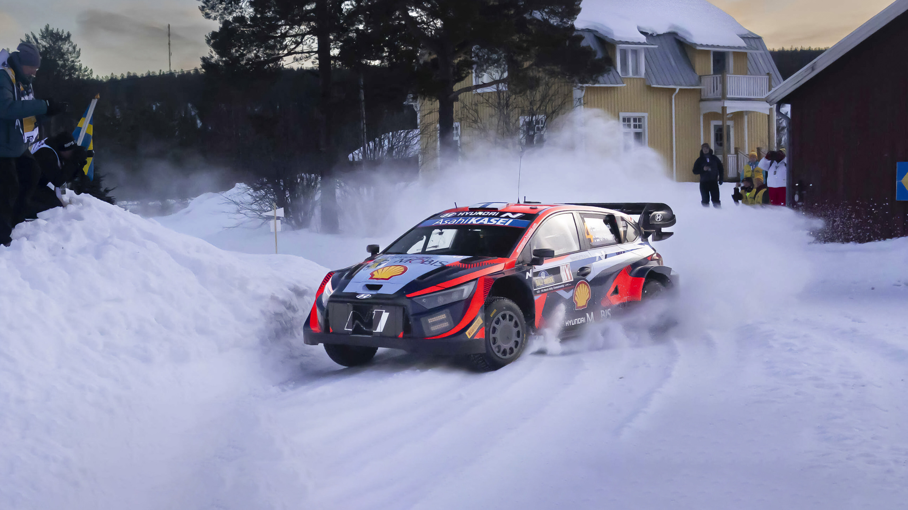

O Campeonato Mundial de Rally (WRC) foi criado pela FIA em 1973, unificando provas de prestígio que já aconteciam de forma independente. A categoria atingiu um pico de popularidade e perigo nos anos 1980 com os monstruosos carros do Grupo B, banidos em 1986 por questões de segurança.
Ao longo das décadas, o esporte coroou lendas absolutas, com grande domínio de franceses e nórdicos. Sébastien Loeb detém o recorde imbatível de nove títulos mundiais consecutivos (2004-2012) pela Citroën. Seu sucessor direto, Sébastien Ogier, conquistou oito campeonatos por diferentes montadoras. Mais recentemente, o finlandês Kalle Rovanperä fez história ao se tornar o campeão mundial mais jovem da história, liderando a nova geração de pilotos.
Diferente das corridas de pista, o WRC acontece em estradas reais fechadas para o tráfego, desafiando os pilotos em todos os terrenos imagináveis.
Um fim de semana de rali ocorre de quinta a domingo. A competição é dividida em vários "Estágios Especiais", onde os carros largam em intervalos (geralmente de 3 minutos) para correr contra o relógio. O vencedor é quem acumula o menor tempo total. O domingo culmina no "Power Stage", a última especial que distribui pontos extras para o campeonato.
A característica mais única do rali é o navegador (copiloto). Utilizando um caderno de notas detalhado (pacenotes), ele dita o grau de cada curva, saltos e perigos com precisão milimétrica, permitindo que o piloto acelere no limite em estradas desconhecidas.
Imagem: Hyundai i20 N Rally1 em ação. Fonte: Hyundai Motor Group
Em 2022, o WRC introduziu o regulamento "Rally1", entrando na era híbrida. Os carros utilizam um motor 1.6 turbo a gasolina aliado a um sistema elétrico de 100 kW, gerando combinados mais de 500 cavalos de potência.
Diferente dos modelos de rua nos quais são inspirados visualmente, eles possuem tração integral inteligente, caixas sequenciais e suspensões de curso extremamente longo para absorver impactos brutais. A segurança é garantida por uma gaiola de aço tubular ultrarresistente, vital em casos de capotagens em penhascos ou florestas.
O WRC opera com orçamentos menores que a F1, mas expressivos para o automobilismo de estrada. O desenvolvimento de um modelo Rally1 custa cerca de 1 milhão de euros por unidade.
Hoje, a categoria principal é mantida por três construtores: Toyota Gazoo Racing, Hyundai Motorsport e M-Sport (Ford). Para tentar atrair novas montadoras no futuro e reduzir custos, a FIA estuda simplificar o regulamento, removendo os complexos sistemas híbridos e focando em carros mais leves e abastecidos exclusivamente por combustíveis 100% sustentáveis.